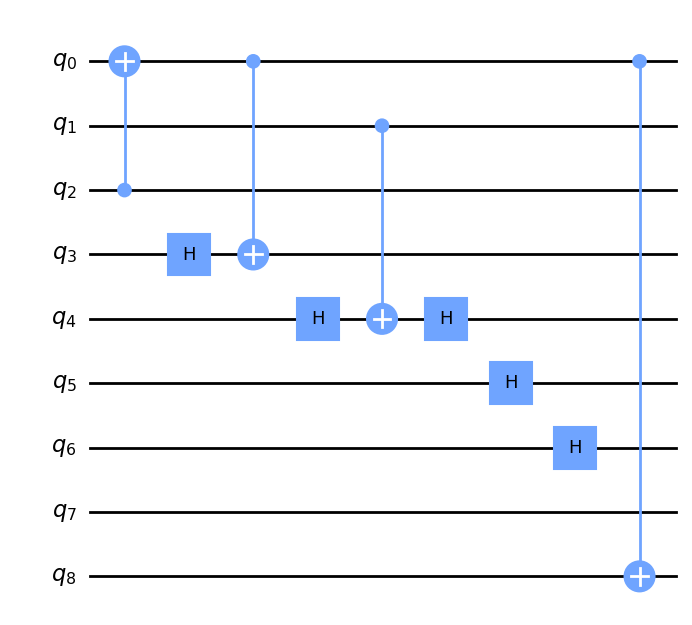
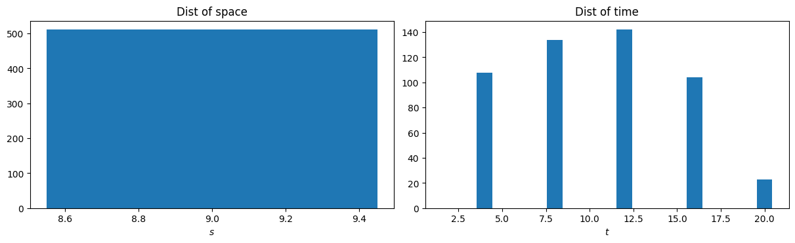
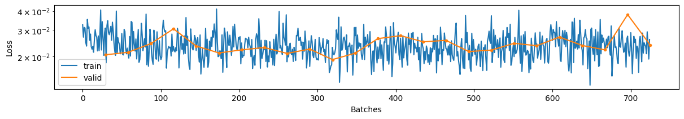

from genQC.imports import *
import genQC.util as util
import genQC.platform.qcircuit_dataset_construction as data_const
import genQC.inference.infer_srv as infer_srv
import genQC.dataset.dataset_helper as dahe
from genQC.pipeline.diffusion_pipeline import DiffusionPipeline
from genQC.dataset.qc_dataset import Qc_Config_Dataset
from genQC.dataset.mixed_cached_qc_dataset import Mixed_Cached_OpenClip_DatasetSRV demo-dataset and fine-tune
In this notebook we create a (demo) 9-qubit dataset and fine-tune the model with it. Note, we use direct fine-tuning similar as you would train the model from scratch (with a higher learn-rate and larger dataset).
device = util.infer_torch_device() # use cuda if we can, cpu is much slower
util.MemoryCleaner.purge_mem() # clean existing memory alloc[INFO]: Cuda device has a capability of 8.6 (>= 8), allowing tf32 matmul.Setup and load
def get_preTrained_pipeline():
model_path = "../../saves/qc_unet_config_SRV_3to8_qubit/"
pipeline = DiffusionPipeline.from_config_file(model_path, device)
return pipelineLoad the pre-trained model. Set 20 sample steps and use rescaled guidance-formula.
pipeline = get_preTrained_pipeline()
pipeline.guidance_sample_mode = "rescaled"
pipeline.scheduler.set_timesteps(20)
print("Trained with gates:", pipeline.gate_pool)[INFO]: `genQC.models.unet_qc.QC_Cond_UNet` instantiated from given config on cuda.
[INFO]: `genQC.models.frozen_open_clip.CachedFrozenOpenCLIPEmbedder` instantiated from given config on cuda.
[INFO]: `genQC.models.frozen_open_clip.CachedFrozenOpenCLIPEmbedder`. No save_path` provided. No state dict loaded.
Trained with gates: [<class 'qiskit.circuit.library.standard_gates.h.HGate'>, <class 'qiskit.circuit.library.standard_gates.x.CXGate'>]Generate 9 qubit circuits without fine-tune
Generate circuits as explained in the 0_hello_circuit [doc] [notebook] example.
srv = [2, 2, 2, 1, 1, 1, 1, 1, 2] # set your target SRV
num_of_qubits = len(srv)
assert num_of_qubits == 9
prompt = f"Generate SRV: {srv}" # model was trained with this phrase
prompt'Generate SRV: [2, 2, 2, 1, 1, 1, 1, 1, 2]'g = 7.5 # guidance scale
max_gates = 16 # how many time steps the tensor encoding has
samples = 64 # how many circuits to generate
out_tensor = infer_srv.generate_srv_tensors(pipeline, prompt, samples, num_of_qubits, num_of_qubits, max_gates, g, no_bar=False)
qc_list, error_cnt, srv_list = infer_srv.convert_tensors_to_srvs(out_tensor, pipeline.gate_pool) # may take a moment, has to compute partial traces over (2^9)x(2^9) density matrices
print(f"Not valid error circuits: {error_cnt} out of {samples}")[INFO]: (generate_srv_tensors) Generated 64 tensors
Not valid error circuits: 1 out of 64acc = infer_srv.get_srv_accuracy(srv_list, srv)
print(f"Accuracy on requested {len(srv)} qubit SRV={srv}, with a model trained on 3 to 8 qubits circuits: {acc:.2f}")Accuracy on requested 9 qubit SRV=[2, 2, 2, 1, 1, 1, 1, 1, 2], with a model trained on 3 to 8 qubits circuits: 0.02Fine-tune dataset
Let’s create a 9 qubit fine-tune training dataset.
Sampling random circuits
We sample random 9 qubit circuits on which we fine-tune on. Note, there is no balancing over what SRVs are created! The initial model was only trained on 3 to 8 qubit circuits.
# settings for random circuit sampling
random_samples = int(512) # how many rnd qcs we sample, here small number to speed up example
num_of_qubits = 9
min_gates = 2
max_gates = 20
gate_pool = pipeline.gate_pool
optimized = True # if qiskit optimizer is used
x, y = data_const.gen_qc_dataset(samples=random_samples, num_of_qubits=num_of_qubits, min_gates=min_gates, max_gates=max_gates,
gate_pool=gate_pool, optimized=optimized, silent=False)Generated unique circuits: 511y[0]tensor([1, 1, 1, 1, 1, 1, 1, 1, 1], dtype=torch.int32)y = np.array([f"Generate SRV: {srv.numpy()}" for srv in y]) # convert SRV to the trained prompt
y[0]'Generate SRV: [1 1 1 1 1 1 1 1 1]'We get tokenized circuits with SRV:
print(f"Example circuit with prompt: \n{y[-1]} \n{x[-1]}")Example circuit with prompt:
Generate SRV: [1 1 1 1 2 1 2 1 1]
tensor([[ 2, 2, 0, 0, 0, 0, 0, 0, 0, 0, 0, 0, 0, 0, 0, 0, 0, 0, 0, 0],
[ 0, 0, 0, 0, 0, 0, 0, 0, 0, 0, 0, 0, 0, 0, 0, 0, 0, 0, 0, 0],
[-2, 0, 0, 0, 0, 0, 0, 0, 0, -2, 0, 0, 0, 0, 0, 0, 0, 0, 0, 0],
[ 0, -2, 1, 0, 0, 0, 0, 0, 0, 0, 2, 0, 0, 0, 0, 0, 0, 0, 0, 0],
[ 0, 0, 0, 0, 0, 2, 1, 2, -2, 2, 0, 0, 0, 0, 0, 0, 0, 0, 0, 0],
[ 0, 0, 0, 1, 2, 0, 0, 0, 0, 0, 0, 0, 0, 0, 0, 0, 0, 0, 0, 0],
[ 0, 0, 0, 0, -2, 0, 0, 0, 2, 0, 0, 0, 0, 0, 0, 0, 0, 0, 0, 0],
[ 0, 0, 0, 0, 0, -2, 0, -2, 0, 0, -2, 0, 0, 0, 0, 0, 0, 0, 0, 0],
[ 0, 0, 0, 0, 0, 0, 0, 0, 0, 0, 0, 1, 0, 0, 0, 0, 0, 0, 0, 0]], dtype=torch.int32)Create a basic dataset
Direct fine-tuning is the same as you would train a new model from scratch. First, we create a Qc_Config_Dataset object that handles our dataset.
# meta-data of dataset
paras = {}
paras["store_dict"] = {'x':'tensor', 'y':'numpy'} #what is in the datset, with type
paras["optimized"] = optimized
paras["dataset_to_gpu"] = True if device=="cuda" else False
paras["random_samples"] = random_samples
paras["num_of_qubits"] = num_of_qubits
paras["min_gates"] = min_gates
paras["max_gates"] = max_gates
paras["gate_pool"] = [dahe.class_to_str(gate) for gate in gate_pool]Make sure our dataset has no duplicates and shuffle it:
x, y = dahe.uniquify_tensor_dataset(x, y)
assert x.shape[0] == x.unique(dim=0).shape[0] # check if no duplicates
x, y = dahe.shuffle_tensor_dataset(x, y)Now create the Qc_Config_Dataset object:
qc_Config_Dataset = Qc_Config_Dataset(store_device=device, **paras)
qc_Config_Dataset.x = x
qc_Config_Dataset.y = y
qc_Config_Dataset.dataset_to_gpu = True if device.type=="cuda" else False
qc_Config_Dataset.plot_example()Label: ``Generate SRV: [1 1 1 1 1 1 1 1 1]`` SRV is: [1, 1, 1, 1, 1, 1, 1, 1, 1]
# qc_Config_Dataset.plot_distribution() #print the SRV distribution percentagesIf you want to save the dataset to disk, you could use:
config_path = "YOUR_CONFIG_FILE"
save_path = "YOUR_SAVE_PATH"
qc_Config_Dataset.save_dataset(config_path, save_path)where config_path file-path to the meta-data file, e.g. "../../configs/dataset/qc_9bit_fine_tune.yaml
and save_path file-path prefix where the raw dataset files are stored, e.g. "../../datasets/q-circuits/qc_9bit_fine_tune".
A saved dataset can be loaded with:
qc_Config_Dataset = Qc_Config_Dataset.from_config_file(config_path, device=device) Create a cached (mixed) dataset
To speed up training we can cache the CLIP embeddings of the y dataset labels before we start fitting. We provide the Cached_OpenClip_Dataset object for this. Here we use a further extension, the Mixed_Cached_OpenClip_Dataset. It has advanced methods to handle padding and combining different task (e.g. compile and SRV) or different number of qubit datasets together (as explained in the appendix of the paper). We use it here to automatically cut and pad our 9 qubit circuits to the longest circuit within one batch.
See if the pipeline has already a padding token specified, else define one.
try: pad_constant = pipeline.params_config("")["add_config"]["dataset"]["params"]["pad_constant"] #can NOT be 0 (empty token)! and not any other gate!
except: pad_constant = len(qc_Config_Dataset.gate_pool)+1
print(f"{pad_constant=}")pad_constant=3dataset_list = [qc_Config_Dataset] # what datasets to combine
parameters = asdict(qc_Config_Dataset.params_config)
parameters["num_down_scales"] = 3 # defined by the down-scale layers of the UNet
mixed_dataset = Mixed_Cached_OpenClip_Dataset.from_datasets(dataset_list,
balance_maxes=[1e8], # what the maximum prompt (y) balance limit is, can be used to balance SRVs for different qubit numbers
pad_constant=pad_constant,
device=device,
bucket_batch_size=-1, # if we use bucket padding
max_samples=[1e8], # if we want to limit the sizes of the dataset_list
**parameters) - dataset size after balancing 511Let’s see what we are training on:
fig, axs = plt.subplots(1, 2, figsize=(12, 3.6), squeeze=False, constrained_layout=True)
plt.sca(axs[0, 0])
plt.xlabel(r"$s$")
plt.title("Dist of space")
min_q, max_q = min(d.num_of_qubits for d in dataset_list), max(d.num_of_qubits for d in dataset_list)
data = mixed_dataset.z[:, 0].cpu()
plt.hist(data, bins=np.arange(min_q, max_q+2) - 0.5, rwidth=0.9)
plt.sca(axs[0, 1])
plt.xlabel(r"$t$")
plt.title("Dist of time")
min_g, max_g = min(d.min_gates for d in dataset_list), max(d.max_gates for d in dataset_list)
data = mixed_dataset.z[:, 1].cpu()
plt.hist(data, bins=np.arange(min_g, max_g+2) - 0.5, rwidth=0.9)
plt.show()
Finally, we can create the dataloader used by the DiffusionPipeline.fit() funtion. This also caches all our prompts.
tuned_pipeline = get_preTrained_pipeline() # load a fresh pre-trained model we want to train
dataloaders = mixed_dataset.get_dataloaders(batch_size=16, text_encoder=tuned_pipeline.text_encoder.to(device), y_on_cpu=False) # you can set y_on_cpu=True if you run out of device mem[INFO]: `genQC.models.unet_qc.QC_Cond_UNet` instantiated from given config on cuda.
[INFO]: `genQC.models.frozen_open_clip.CachedFrozenOpenCLIPEmbedder` instantiated from given config on cuda.
[INFO]: `genQC.models.frozen_open_clip.CachedFrozenOpenCLIPEmbedder`. No save_path` provided. No state dict loaded.
[INFO]: Not balancing dataset! balance_max=None
[INFO]: Generate cache: converting tensors to str and tokenize
- to str list
- tokenize_and_push_to_device
- generate_cache
[INFO]: caching trying to allocate memory (148, 77, 512) on cuda approx. 0.023 GB
[INFO]: Generated cacheFine-tune
We have the dataloader object created and can start fine-tuning. Note, we just use all the diffusion scheduler parameters from the pre-trained config we loaded.
tuned_pipeline.add_config["dataset"] = mixed_dataset.get_config() # add meta-data of dataset to save it with pipeline
tuned_pipeline.compile(torch.optim.Adam, nn.MSELoss)epochs = 25 # how many epochs we train on our 9bit dataset
lr = 5e-5 # learn rate
sched = functools.partial(torch.optim.lr_scheduler.OneCycleLR, max_lr=lr, total_steps=epochs*len(dataloaders.train))
tuned_pipeline.fit(epochs, dataloaders, lr=lr, lr_sched=sched)
If you want you can save the tuned pipeline with:
store_dir = f"../../saves/fine_tuned_on_9bits/"
tuned_pipeline.store_pipeline(config_path=store_dir, save_path=store_dir)and load it again with the usual:
tuned_pipeline = DiffusionPipeline.from_config_file(model_path, device) Generate 9 qubit circuits fine-tuned
Test again to create a 9 qubit SRV as we did at the start but with the tuned model:
prompt'Generate SRV: [2, 2, 2, 1, 1, 1, 1, 1, 2]'g = 7.5 # guidance scale
max_gates = 16 # how many time steps the tensor encoding has
samples = 64 # how many circuits to generate
tuned_pipeline.guidance_sample_mode = "rescaled"
tuned_pipeline.scheduler.set_timesteps(20)
out_tensor = infer_srv.generate_srv_tensors(tuned_pipeline, prompt, samples, num_of_qubits, num_of_qubits, max_gates, g, no_bar=False)
qc_list, error_cnt, srv_list = infer_srv.convert_tensors_to_srvs(out_tensor, tuned_pipeline.gate_pool) # may take a moment, has to compute partial traces over (2^9)x(2^9) density matrices
print(f"Not valid error circuits: {error_cnt} out of {samples}")[INFO]: (generate_srv_tensors) Generated 64 tensors
Not valid error circuits: 1 out of 64tuned_acc = infer_srv.get_srv_accuracy(srv_list, srv)
print(f"Accuracy on requested {len(srv)} qubit SRV={srv}, with a model trained on 3 to 8 qubits qcs: {acc:.2f} and with fine-tuning on 9 qubit qcs: {tuned_acc:.2f}")Accuracy on requested 9 qubit SRV=[2, 2, 2, 1, 1, 1, 1, 1, 2], with a model trained on 3 to 8 qubits qcs: 0.02 and with fine-tuning on 9 qubit qcs: 0.05Note, we didn’t fine-tune on a balanced dataset with all possible 9 qubit SRVs, just some random circuits (most, ~50%, of them will be the SRV with all 1s). So we don’t expect a huge boost in accuracy.